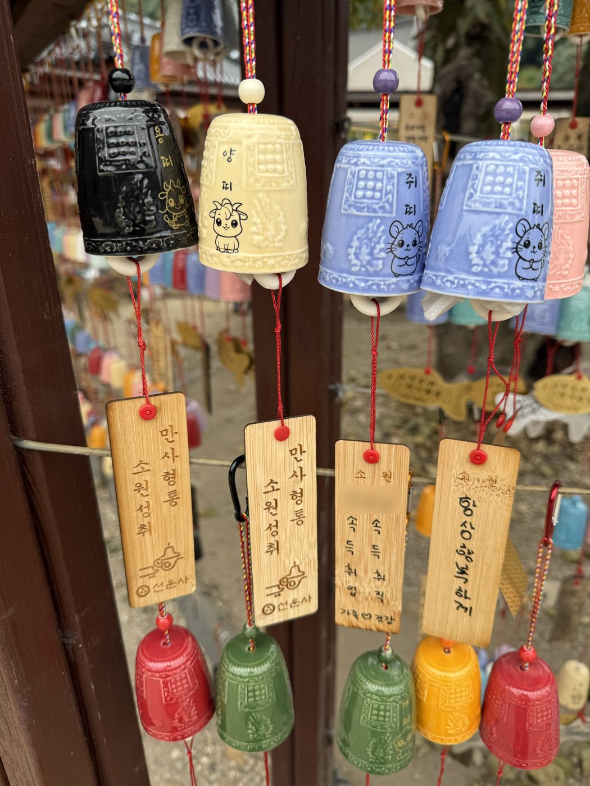
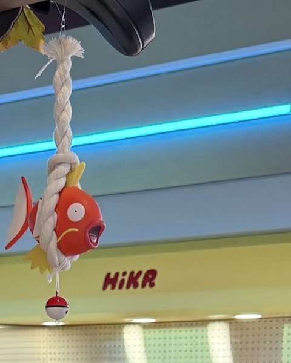
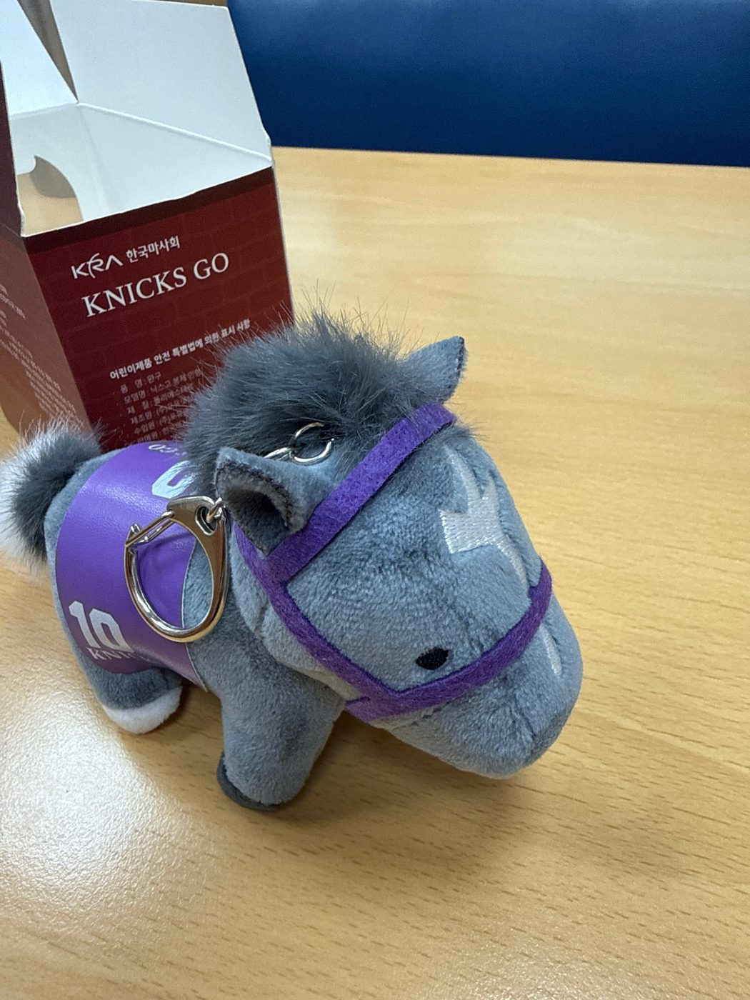

물건은 흔해도, 고른 이유는 저마다.
그 이유를 담아,
레피가 상품에 이야기를 입혀드려요.
없는 이야기는 만들지 않아요.
내용은 사장님 메모에서, 표현은 더 선명하게.
사장님 메모 · 밀짚모자
못생긴 밀짚모자인데 철원 주상절리입장료내면 한사람당 5천원 상품권주는데 그걸 이용하면 주변상점에서 살수 있거든 너무 햇볕이 뜨거워서 어쩔수 없이 샀는데 국내 여행갈때마다 필요할때 들고갔더니 추억템이 됐어
레피가 정리한 글
예쁘진 않아도,
여행마다 따라다니면 추억이 되는 모자.
메모 몇 줄이,
올릴 수 있는 글이 됐어요.
메모에서 이야기를 찾고, 그중 가장 사장님다운 한마디를 앞에 세워요.
밑줄은 레피가 메모에서 찾아 글에 쓴 재료예요.
-

선운사 소원의 종 10,000원사장님 메모
선운사 종은 만원인데 소원나무에 저렇게 대부분 가족의 건강과 성공을 기원하는 거라 나도 시댁어른이랑 남편이랑 간 김에 구매했어. 사서 몸에 지니지 않더라도 저렇게 바람에 풍경처럼 흔들리면서 촤르르 소리나니까 마음이 평안해지면서 꼭 소원이 이루어진것 같더라
레피가 정리한 글
빌고 지나간 소원을,
바람 부는 자리에 오래 남겨두는 종.촤르르.
바람이 불 때마다 풍경처럼 흔들리며 나는 소리입니다.선운사 소원나무에는 이런 종이 가득 걸려 있습니다. 대부분 가족의 건강과 성공을 비는 소원이에요. 꼭 몸에 지니지 않아도 괜찮습니다.
저는 그 소리를 듣고 있으면 마음이 평안해지고, 꼭 소원이 이루어진 것 같습니다.
가족과 함께 오신 김에, 하나 걸어두고 가세요.
-

잉어킹 액막이 가챠 1회 10,000원사장님 메모
남편이랑 포켓몬팝업이 있다고 해서 놀러갔더니 잉어킹액막이가 있더라고 그런데 가챠로밖에 안팔아서 만원이라는 큰 금액이어도 한번 도전해봤더니 성공해서 한번에 뽑았어 몇달뒤에 이사 예정이어서 가지고 싶었는데 좋은 추억이었어
결과를 보고 덧붙인 말
별일 없이 잘 지나가자는 마음을 걸어두는 작은 액막이 이런 글귀도 있으면 좋지
레피가 정리한 글
별일 없이 잘 지나가자는
마음을 걸어두는 작은 액막이.이사를 앞두고 있다면, 이런 거 하나쯤 갖고 싶어집니다.
잉어킹 액막이는 가챠로만 만날 수 있습니다. 한 번에 만 원이라, 가볍게 돌리긴 어려운 금액이죠. 그래도 새집에 들어가기 전이라면, 한 번쯤 도전해볼 만합니다.
-

닉스고 인형 키링 8,000원사장님 메모
저는 현역 시절 닉스고를 응원했습니다. 세계적인 무대에서 좋은 성적을 거두던 한국마사회 소유의 말이라는 점도 특별하게 느껴졌고요. 지금은 경주에서 은퇴해 씨수말로 지내고 있지만, 마사회 공식 굿즈에서 실제 닉스고의 외형을 본떠 만든 인형을 발견했습니다. 여러 마사회 굿즈 중에서도 가장 실제 말처럼 생겼고, 무엇보다 귀여웠습니다. 가격은 8천 원. 그래서 하나 데려왔습니다.
레피가 정리한 글
응원하던 말의 경주는 끝나도,
그때의 기억은 곁에 둘 수 있으니까.세계적인 무대에서 좋은 성적을 거두던 한국마사회 소유의 말, 닉스고.
저도 현역 시절 응원했던 말입니다.지금은 경주장을 떠나 씨수말로 지내고 있지만, 그 모습을 본뜬 인형이 마사회 공식 굿즈로 나와 있습니다. 여러 굿즈 중에서도 가장 실제 말처럼 생겼고, 무엇보다 귀엽습니다.
그 시절을 기억하는 분이라면, 하나 데려가셔도 좋겠습니다.
-
밀짚모자 철원 주상절리 입장 상품권으로 구매
사장님 메모
못생긴 밀짚모자인데 철원 주상절리입장료내면 한사람당 5천원 상품권주는데 그걸 이용하면 주변상점에서 살수 있거든 너무 햇볕이 뜨거워서 어쩔수 없이 샀는데 국내 여행갈때마다 필요할때 들고갔더니 추억템이 됐어
레피가 정리한 글
예쁘진 않아도,
여행마다 따라다니면 추억이 되는 모자.솔직히 말하면, 못생긴 모자입니다.
그런데 철원 주상절리에서 햇볕이 너무 뜨거운 날엔 어쩔 수 없이 이 모자를 찾게 됩니다. 입장료를 내면 받는 5천 원 상품권으로 살 수 있거든요.
저는 그 뒤로 국내 여행 갈 때마다 필요할 때면 이 모자를 들고 다녔습니다. 그러다 보니 추억템이 됐어요.
위 글은 실제 구매 경험을 바탕으로, 판매하는 입장이 되어 정리한 시연 예시예요. 제조사나 판매처의 공식 문구가 아니에요.
내 메모로
직접 테스트해보세요.
상품 메모를 적어주세요. 그 안의 이야기를 찾아 상품 글로 정리해드려요.
메모에 있는 이야기로만 쓰니까, 이 상품을 고른 이유나 있었던 일을 한두 줄 꼭 넣어주세요.
테스트 모드 · 산 사람이 쓴 메모를 판매자 글로 바꿔요. 횟수 제한이 없어요.
레피를 더 이용하고 싶으시면 베타 참여를 신청해 주세요.
설명은 했는데,
왜 사야 하는지가 없어요.
손님이 그걸 왜 자기 것으로 만드는지,
그 한 문장이 빠져 있을 뿐이에요.
전하고 싶은 의미는 그대로,
표현은 더 선명하게.
상품 사진 한 장, 대충 적은 메모 몇 줄이면 돼요. 잘 쓰지 않아도 괜찮아요.
메모 속 사실과 경험에서 출발해요. 없는 이야기는 보태지 않고, 모자라면 되물어요.
헤드라인 한 문장과 본문으로. '못생긴' 같은 사장님 말은 광고 문구로 바꾸지 않아요.
올리기 전에 내용은 직접 확인해주세요. 레피는 결정을 대신하지 않아요.
기능을 자랑하기보다,
당신의 하루에 맞췄어요.
게시 전 문장 정리
거칠게 쓴 초안이나 메모를 SNS에 올릴 수 있는 문장으로 다듬어요.
핵심 정보 유지
가격, 날짜, 메뉴명, 구성, 예약 조건처럼 틀리면 안 되는 정보는 적어주신 그대로 지켜요.
프롬프트 없는 실행
"과하지 않게", "우리 가게 톤으로" — 매번 같은 부탁을 길게 쓰지 않아도 돼요.
작업 흐름 안에서 사용
창을 옮겨 다니지 않아도 돼요. 글을 넣고 결과를 보는 흐름이 한 곳에서 이어져요.
음성으로 남기기
정식 출시 예정손이 바쁠 땐 말로 남겨두세요. 나중에 올릴 글로 정리해드려요.
고도화 예정 브랜드 톤 프로필 — 레피를 사용하면서 사장님만의 말투와 표현을 쌓아가요.
혹시, 이런 게 궁금하셨나요?
설명만 적어둔 상품,
레피에게 먼저 보여주세요.
상품 하나, 메모 몇 줄이면 충분해요.
레피가 어떤 이야기를 입히는지, 부담 없이 먼저 만나보세요.